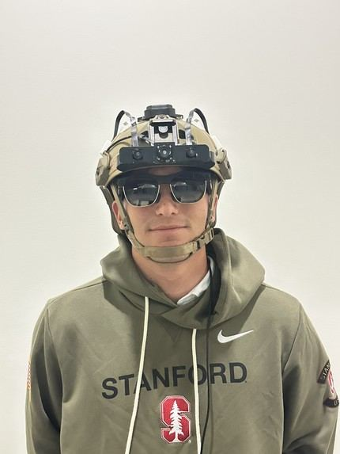
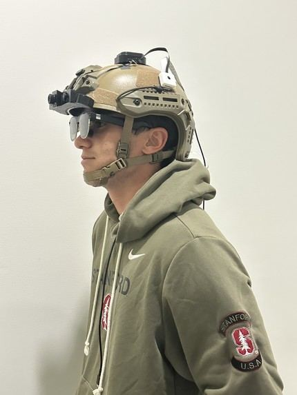

A zero-latency AR heads-up display for hands-free search and rescue. It overlays thermal target detection, patient vitals, and GPS/Wi-Fi positioning directly in the rescuer's view, so they can see people, health data, and location without taking their hands off the mission. It won 1st Place at the Stanford XR Hackathon (Immerse the Bay).
In disaster zones and rural search-and-rescue missions, responders juggle radios, maps, thermal cameras, and medical tools, often in low visibility and heavy noise. Every device they have to hold or look down at takes attention and hands away from the rescue.
The system pairs an AR passthrough HUD on XREAL Air Pro 2 glasses with a real-time thermal imaging pipeline. The pipeline detects heat signatures and streams bounding boxes to a custom app, and passthrough viewing stays truly zero-latency.
I led CAD and interaction design on a team of three. That covered the helmet-mounted hardware and how information appears in the HUD. The project took 1st Place at the Stanford XR Hackathon.

